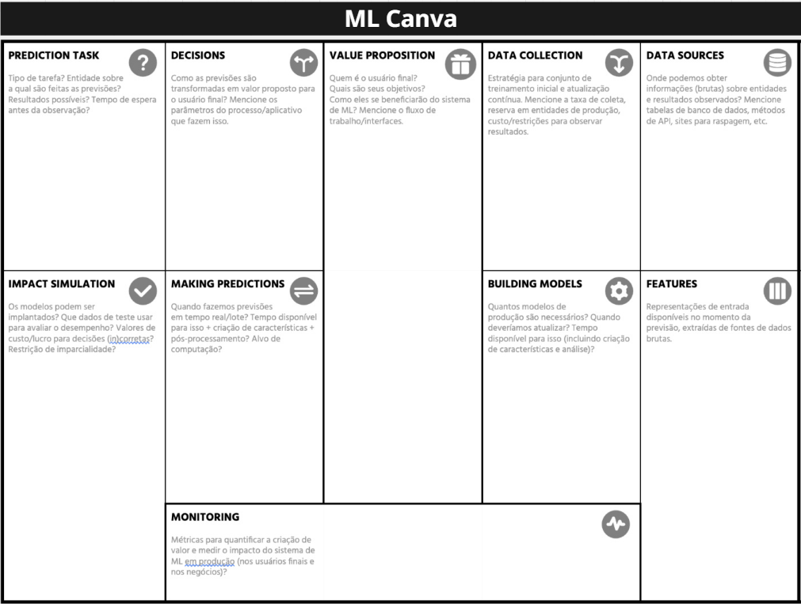

ML Canva
Modelo Machine Learning Canva (ML Canva)

ML Canva do projeto
Você também pode acessar o Canva do projeto aqui
Proposta de Valor (Value Proposition)
Para a População Civil (Usuário Final):
Chatbot:
O usuario, que deseja realizar manifestações na plataforma fala.BR, terá acesso a um chatbot de ouvidoria que funciona como uma interface de comunicação. O sistema irá entender as necessidades e explicar informações relacionadas a procedimentos de ouvidoria, direitos e manifestações, além de auxiliar na construção de manifestações qualificadas em uma linguagem simplificada. Dessa forma, o cidadão estará capacitado para usufruir da plataforma e informado sobre seus direitos e o funcionamento dos serviços de Ouvidoria, sem a necessidade da procura manual nos documentos governamentais ou manuais do Fala.BR.
Fluxo de trabalho do chatbot:
- Usuário → mensagem → chatbot → interpretação → resposta ou redirecionamento.
Qualificação de campos:
O usuário conversa por voz com o chatbot explicando sua situação, e ele fará a atribuição dos campos do formulário com base no que foi dito, com o chatbot perguntando, por exemplo, se "o órgão responsável pela denúncia seria a CGU? Sim ou não?". Então os campos do formulários seriam preenchidos ou não com base nas respostas.
OU, o usuário preenche os campos e, ao descrever o problema/solicitação na descrição, o chatbot sugerir que alguma alteração pode ser bem vinda. Por exemplo, "Para sua solicitação, seria mais adequado o assunto XYZ? Sim ou não?"
Para o Governo (Ouvidoria e Gestores Públicos):
O governo, que deseja melhorar o acesso a informação para a população sobre Ouvidoria e disseminar a utilização da plataforma Fala.BR, terá um sistema integrado com todos os documentos e manuais relevantes sobre Ouvidoria Pública e a plataforma Fala.BR, além de informações cruciais sobre as principais dúvidas e solicitações de informações da população. Para isso, o sistema irá analisar os logs de conversa e identificar os principais questionamentos dos cidadões. Com isso, o governo poderá disponibilizar uma ferramenta com todas as informações sobre Ouvidoria Pública em um único lugar, melhorando o acesso à informação para a população civil, além de conseguir encontrar gargalos e necessidades nas documentações disponibilizadas.
Fluxo de trabalho:
- Interpretação logs de mensagens dos usuários → geração de relatório -> envio de relatorio para Orgão Governamental responsável
Fonte de Dados (Data Sources)
Para o desenvolvimento do sistema RAG, a base de conhecimento será construída a partir de duas categorias principais de fontes de dados: as normativas e oficiais e as transacionais.
As fontes normativas e oficiais incluem a legislação fundamental sobre ouvidoria pública, como a Lei nº 13.460/2017 e o Decreto nº 9.492/2018, que estabelecem os direitos dos usuários e as diretrizes do sistema. Complementando a legislação, serão utilizados manuais, FAQ's e cartilhas da Controladoria-Geral da União (CGU) e de outros órgãos, que fornecem detalhes procedimentais e práticos sobre a plataforma fala.BR e os processos de ouvidoria pública.
As fontes transacionais, por sua vez, estão ligadas à forma como os cidadãos interagem com o sistema. Elas serão obtidas a partir dos logs das conversas realizadas diretamente com o chatbot. Adicionalmente, será incorporada a base de dados de pedidos de acesso à informação e respectivas respostas já processadas pela plataforma Fala.BR, disponíveis para consulta pública no site https://buscalai.cgu.gov.br.
Coletando Dados (Data Collection)
Conjunto inicial de dados
-
Utilização dos documentos e decretos governamentais em formato pdf Webscrapping das páginas de manuais da plataforma Fala.BR e outros sites associados.
-
Data Augmentation: uso de NLG (Natural Language Generation) com BERT para criação de possíveis perguntas que os usuários podem fazer na plataforma.
- Utilização dos FAQ's de Ouvidoria e exemplos manuais para os casos base.
-
Manifestações de acesso a informação
-
Custos associados: A princípio somente a mão de obra para criação dos scrapers e dos exemplos manuais de perguntas
Coletas a longo prazo (contínuo)
-
Logs de conversas do chatbot para coleta de perguntas dos usuários e feedbacks dos usuários com as respostas a partir de pesquisa de satisfação no próprio chatbot
- Quantidade de feedbacks e logs dependente da aderência dos usuários a plataforma.
- Restrição: Garantir privacidade dos usuários e anonimização dos dados coletados no chatbot.
-
Atualizações dos manuais da plataforma fala.BR, obtidos por meio de scrapes atualização semanal no modelo
Funcionalidades (Features)
Consulta solicitada pelo usuário (texto):
-
Extração de palavras-chave: Entidades Nomeadas
-
Intenção do usuário: objetivo na consulta
Histórico de conversa:
-
Tópico da Conversa Anterior: O que foi discutido nas mensagens anteriores
-
Estado da Conversa: Em que ponto do fluxo a conversa está (inicio_conversa, solicitando_criacao_manifestacao, informação_fornecida...)
-
Tempo entre mensagens: Identificar se permanece no mesmo contexto, se é algo totalmente diferente...
Construindo Modelos (Building Models)
Modelo principal de Processamento de Linguagem Natural (NLP). Treinamento com dados de perguntas e respostas reais da Ouvidoria. Atualizações periódicas (mensal ou trimestral) conforme surgem novas dúvidas.
Decisões (Decisions)
As previsões (intenção do usuário) são transformadas em respostas automáticas via WhatsApp. O chatbot decide qual resposta enviar ou se precisa encaminhar o usuário a um atendente humano. O modelo de NLP (ex: BERT ou modelo fine-tuned) é responsável pela classificação da intenção e seleção da resposta correspondente.
-
Geração de Resposta Contextualizada: O modelo de NLP, operando em uma arquitetura RAG (Retrieval-Augmented Generation), não apenas classifica uma intenção, mas busca informações na base de conhecimento e gera uma resposta contextualizada.
-
Parâmetro-Chave: Limiar de Confiança (Confidence Score): Cada resposta gerada é acompanhada de um score de confiança. Este score mede a relevância dos documentos encontrados na base de conhecimento e a consistência da resposta gerada.
-
Árvore de Decisão Automática:
-
Se o Score de Confiança for alto (<=0.85): O sistema entrega a resposta automatizada ao usuário.
-
Se o Score de Confiança for baixo (>0.85) ou se nenhum documento relevante for encontrado: O sistema ativa o protocolo de fallback, pedindo mais informações e, se após a resposta ainda não tiver resultado conclusivo, abortar.
-
Predições de Tarefas (Prediction Task)
Tipo de tarefa: Classificação de intenção e recuperação de resposta.
Entidade: Usuário do WhatsApp que faz perguntas sobre a Ouvidoria.
Resultados possíveis: Identificar o tipo de dúvida (ex: “como registrar reclamação”, “acompanhar protocolo”, “função da Ouvidoria”, “tempo de resposta”, etc.) e responder com a informação correta.
Tempo de espera antes da observação: Resposta imediata (em tempo real).
Fazendo Predições (Making Predictions)
Previsões feitas em tempo real (mensagens instantâneas).
Criação de embeddings e classificação rápida para cada mensagem.
Tempo disponível: milissegundos, para manter fluidez na conversa.
Processamento realizado no servidor ou em cloud (ex: AWS/Lambda, GCP Functions).
Simulação de impacto (Impact Simulation)
O modelo pode ser implantado em produção via API conectada a uma interface web de chatbot. Avaliar desempenho com métricas de acurácia da intenção e satisfação do usuário.
Medir impacto: redução de atendimentos manuais, tempo médio de resposta e nível de automação alcançado.
Garantir imparcialidade e evitar respostas inadequadas (ex: enviesadas politicamente).
Monitoramento (Monitoring)
Métricas: taxa de acerto das intenções, tempo médio de resposta, taxa de fallback (respostas genéricas), e satisfação do usuário.
Monitorar também feedbacks e logs de erros.
Avaliar impacto no negócio: redução de custo de atendimento e aumento da disponibilidade de informações públicas.